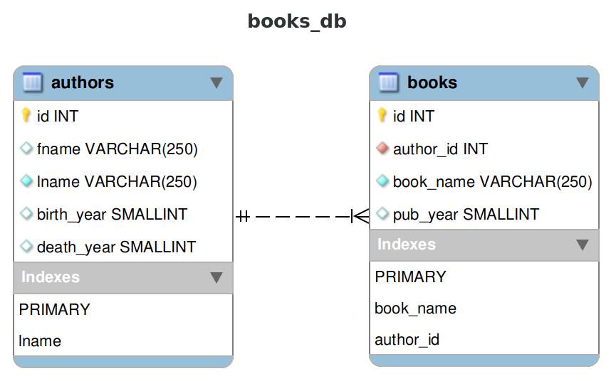

Keyboard shortcuts:
N/СпейсNext Slide
PPrevious Slide
OSlides Overview
ctrl+left clickZoom Element
If you want print version => add '
?print-pdf' at the end of slides URL (remove '#' fragment) and then print.
Like: https://wwwcourses.github.io/...CourseIntro.html?print-pdf
Упражнение по добавяне, променяне, премахване и селектиране на данни
Created for
Created by
Task1: Create books_db schema
Task1: CRUD in books_db schema
Create schema
- Create a database `books_db`
- In `books_db` create 2 tables, following next ER Diagram: 
- Note that `authors` has next constraints:
- `id`: PRIMARY KEY
- `lname`: INDEX for first 10 chars, not null values
- Note that `books` has next constraints:
- `id`: PRIMARY KEY
- `book_name`: INDEX for first 10 chars, not null values
- `author_id`: FOREIGN KEY to authors.id with constraint: ON DELETE CASCADE
{kind=link}
Insert data
- Insert into `authors` tables, next data:
- Insert into `books` table, the data given in next sql file: books_db.books_data.sql
+----+---------+----------+------------+------------+
| id | fname | lname | birth_year | death_year |
+----+---------+----------+------------+------------+
| 1 | Kurt | Vonnegut | 1922 | 2007 |
| 2 | Douglas | Adams | 1952 | 2001 |
| 3 | Charles | Dodgson | 1832 | 1898 |
+----+---------+----------+------------+------------+
Simple selects
- Select all books (name and year) sorted by pub_date, ascending
- How many are the books published before 1900 year?
- Select all books (name and year) published in 20th century:
- Show how many years each of the authors have lived:
+----------+-------+
| lname | lived |
+----------+-------+
| Vonnegut | 85 |
| Adams | 49 |
| Carroll | 66 |
+----------+-------+
More selects
- Select all books (name and year) written by 'Kurt Vonnegut'
- Select the last 3 published books (name and year) written by 'Kurt Vonnegut'
+------------------------+----------+
| book_name | pub_year |
+------------------------+----------+
| The Sirens of Titan | 1959 |
| Mother Night | 1961 |
| Cat's Cradle | 1963 |
| God Bless You | 1965 |
| Slaughterhouse | 1969 |
| Breakfast of Champions | 1973 |
+------------------------+----------+
+------------------------+----------+
| book_name | pub_year |
+------------------------+----------+
| Breakfast of Champions | 1973 |
| Slaughterhouse | 1969 |
| God Bless You | 1965 |
+------------------------+----------+
Select with group by
- Show how many books each of the authors has published?
+----------+-------------+
| author | books_count |
+----------+-------------+
| Vonnegut | 6 |
| Adams | 8 |
| Dodgson | 21 |
+----------+-------------+
Update
- Rename author 'Charles Dodgson' to 'Lewis Carroll'
- After successful rename, table authors must be:
+----+---------+----------+------------+------------+
| id | fname | lname | birth_year | death_year |
+----+---------+----------+------------+------------+
| 1 | Kurt | Vonnegut | 1922 | 2007 |
| 2 | Douglas | Adams | 1952 | 2001 |
| 3 | Lewis | Carroll | 1832 | 1898 |
+----+---------+----------+------------+------------+
These slides are based on
customised version of
framework